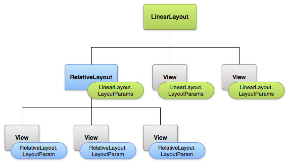

Definition: Layout
- A layout defines the visual structure for a user interface, such as the UI for an activity or app widget.
- You can declare a layout in two ways: Declare UI elements in XML or Instantiate layout elements at runtime i.e.programmatically.
- The advantage to declaring your UI in XML is that it enables you to better separate the presentation of your application from the code that controls its behavior.
XML Layout:
Loading XML in Code:
View Attributes:
Layout Parameters:
- Every ViewGroup class implements a nested class that extends ViewGroup.LayoutParams.
- This subclass contains property types that define the size and position for each child view, as appropriate for the view group.
- Figure below is Visualization of a view hierarchy with layout parameters associated with each view.

- All view groups include a width and height (layout_width and layout_height), and each view is required to define them.
Size, Padding and Margins:
- The size of a view is expressed with a width and a height.
- To measure its dimensions, a view takes into account its padding. The padding is expressed in pixels for the left, top, right and bottom parts of the view.
- Even though a view can define a padding, it does not provide any support for margins. However, view groups provide such a support.
Commonly used Layouts:
- Below are some of the more common layout types that are built into the Android platform.
- Linear Layout: A layout that organizes its children into a single horizontal or vertical row. It creates a scrollbar if the length of the window exceeds the length of the screen.
- Relative Layout: Enables you to specify the location of child objects relative to each other (child A to the left of child B) or to the parent (aligned to the top of the parent).
- Web View: Displays web pages.
Using Adapter:
- When the content for your layout is dynamic or not pre-determined, you can use a layout that subclasses AdapterView to populate the layout with views at runtime.
- Common layouts backed by an adapter include List View and Grid View.
- List View: Displays a scrolling single column list.
- Grid View: Displays a scrolling grid of columns and rows.
- You can populate an AdapterView by binding the AdapterView instance to an Adapter, which retrieves data from an external source and creates a View that represents each data entry.
- For example, if you have an array of strings you want to display in a ListView, initialize a new ArrayAdapter using a constructor to specify the layout for each string and the string array:
ArrayAdapter listAdapter = new ArrayAdapter(this,
android.R.layout.simple_list_item_1, stringArray);
-
Then call setAdapter() on ListView:
ListView lv = (ListView) findViewById(R.id.myListview);
lv.setAdapter(listAdapter);
Handling click events for AdapterView:
- You can respond to click events on each item in an AdapterView by implementing the AdapterView.OnItemClickListener interface.
For example:
private OnItemClickListener customHandler = new OnItemClickListener() {
public void onItemClick(AdapterView parent, View v, int position, long id) {
// Action on Click
}
};
listView.setOnItemClickListener(customHandler);
Note:
Portions of this page are modifications based on work created and shared by the Android Open Source Project and used according to terms described in the Creative Commons 2.5 Attribution License.
For more information,
click here to original source page.